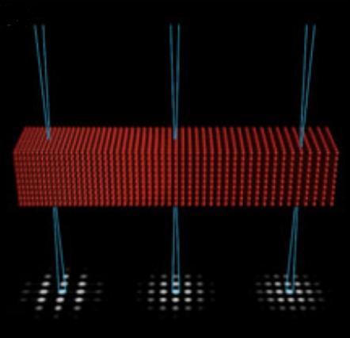
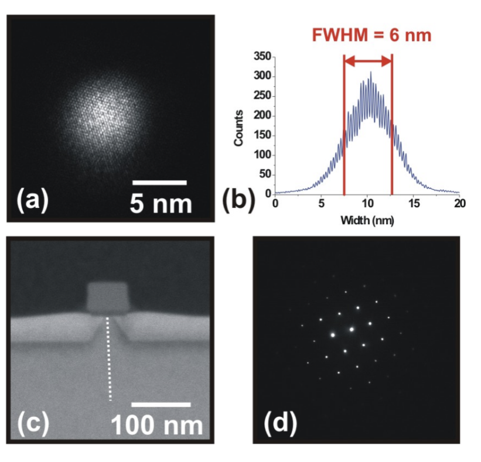
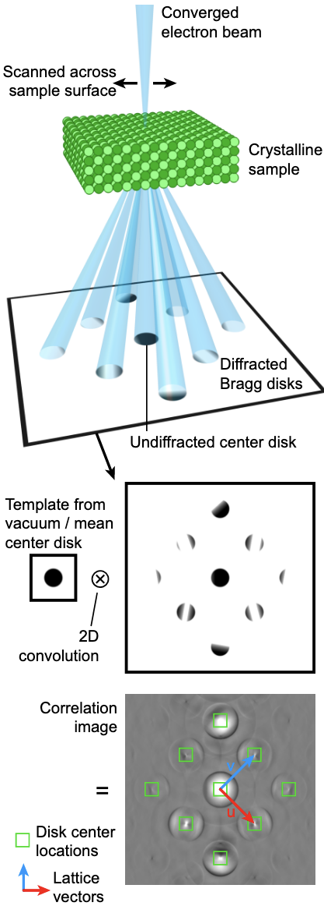

![]()
from sympy import symbolsProject thesis
Keywords
Strain Mapping, py4DSTEM
1 Introduction
Different properties in materials, such as electronic, mechanical, and chemical properties, are related to structural deformation (Wang et al. 2022). In semiconductor devices to estimate intended and unintended strain distributions it is vitally important to use Measurtement of strain with high spatial resolution and high preciscion (Zeltmann et al. 2020). It is also neccesary have combination of high resolution with large field of view.
X-rays techniques are able measure strain with points that it is important, high resolution, high precision(≈ \(10^{-5}\) (Darbal et al. 2013) (Robinson and Harder 2009))and large field of view, but they do not keep the need of high spatial resolution(≈500 nm(Darbal et al. 2013)). Which makes them inappropriate for analyzing the next generation of nanoscale materials and devices (Darbal et al. 2013) (Robinson and Harder 2009).
Quantitive structure retrieval using computer-controlled high resolution electron microscopy(HREM)images is much less frequent rather than X-ray diffraction patterns, despite its potential for applications including interfaces and dislocations in area like high localized crystal defect structures (Möbus et al. 1998) . These methods is dictated the local intensity in micrograph by the position of atomic columns (Du and Phillipp 2006) . Using images instead of diffraction offers high spatial resolution, but the field of view is limited (Mahr et al. 2015) . The shape of the measured lattice strain profiles can indicate artifacts depending on the selected imaging conditions. These artifacts arise from continuous contrast variations extending across several monolayers from the interface positions, caused by local crystal tilts in elastically relaxed specimens. Despite this, the average strain in thicker layers can be measured with adequate accuracy, providing a rough estimate of layer compositions when analyzing experimental micrographs (Tillmann, Lentzen, and Rosenfeld 2000) .
On the other hand, strain can be measured using TEM techniques based on diffraction. This paper discusses six different TEM techniques which provide the best spatial resolution (below 5 nm(Zeltmann et al. 2020)) and quantitative strain measurements in the TEM (Darbal et al. 2013) (Robinson and Harder 2009). NBED, CBED, HRTEM, DFEH, HRSTEM, HOLZ.The transmission electron microscopy (TEM) strain measurement techniques exhibit diverse characteristics in precision, spatial resolution, and field of view, as summarized in Table 1 [Hÿtch and Minor (2014) ](Béché et al. 2013). Additionally, in situ mechanical testing techniques can measure not only applied strains but also local strains (Hÿtch and Minor 2014) .
| Mode | Type | Precision | Spatial Resolution | Field of View | Data Volume 2k x 2k 16bit CCD |
|---|---|---|---|---|---|
| CBED | Probe | 2 × 10⁻⁴ | 0.5–2 nm | Unlimited | 1.6GB/ series (100images) |
| NBED | Probe | 10⁻³ | 5–10 nm | Unlimited | 1.6GB/ series (100images) |
| HRTEM | Image | 10⁻³ | 1–2 nm | 100 × 100 \(nm^2\) | 16 MB/ image |
| HRSTEM | Image | 10⁻³ | 1–2 nm | >400 × 400 \(nm^2\) | 16 MB/ image |
| DFEH | Image | 2 × 10⁻⁴ | 2–4 nm | 1500 × 500 \(nm^2\) | 16 MB/ image |
2 Overview
2.1 Strain Measurement and Mapping
The relationship between structure and material properties can be determined by measuring the strain that probes the structural deformation(Wang et al. 2022).For mesearing strain there is two techniques, Peak Finding Analysis (PF) and Geometric Phase Analysis (GPA)(Cherkashin et al. 2023). Peak-finding techniques offer some advantages, requiring less memory and CPU resources by avoiding complex bidimensional Fourier transforms, except when noise reduction is performed in Fourier space. On the other hand, the Geometric Phase method excels in strain mapping within regions containing structural defects, particularly around dislocations, providing detailed insights into local material deformation (Galindo et al. 2007).
2.1.1 Geometric Phase Analysis(GPA)
The Geometric Phase (GP) methodology is a sophisticated technique for analyzing material deformation through Fourier space processing of high-resolution transmission electron microscopy (HRTEM) lattice images. The method involves filtering images around specific Bragg spots in the Fourier transform, performing an inverse Fourier transform, and extracting phase information about local atomic displacements. By deriving displacement data from non-collinear Fourier components, researchers can precisely calculate strain field components and characterize symmetric and rotational distortions in crystalline materials with exceptional accuracy(Galindo et al. 2007).This method provides insights into local strain distributions through careful phase comparisons and mathematical transformations(Peters 2024).
Fundamental Equations Image Formation Model The image intensity is modeled as a Fourier series representing the periodic structures in the material:
\[I(r) = \sum_{g} A_{g} e^{i(P_{g} + 2\pi i g \cdot r)} \tag{1}\] Where:
\(I\) is the image intensity \(r\) represents the position in the image \(g\) denotes periodicities in the image (reciprocal space coordinates) \(A_{g}\) is the amplitude of the periodicity \(P_{g}\) is the phase of the periodicity
Phase Extraction The phase difference is calculated by: \[P_{g}(r) = \text{Phase}\left[H_{g'}(r)\right] - 2\pi g \cdot r \tag{2}\] This method allows for precise extraction of specific Fourier components by masking the Fast Fourier Transform (FFT). G-vector Refinement The g-vector can be refined by analyzing the phase gradient: \[\Delta g = \frac{1}{2\pi} \nabla P_{g} \tag{3}\] Displacement Field Calculation The displacement field is derived from phase measurements of two non-colinear g-vectors: \[\begin{pmatrix} u_{x} \ u_{y} \end{pmatrix} = -\frac{1}{2\pi} \begin{pmatrix} a_{1x} & a_{2x} \ a_{1y} & a_{2y} \end{pmatrix} \begin{pmatrix} P_{g_{1}} \ P_{g_{2}} \end{pmatrix} \tag{4}\] Strain and Deformation Tensor The distortion tensor is calculated by differentiating the displacement field: \[e = \begin{pmatrix} \frac{\partial u_{x}}{\partial x} & \frac{\partial u_{x}}{\partial y} \ \frac{\partial u_{y}}{\partial x} & \frac{\partial u_{y}}{\partial y} \end{pmatrix}\] From this tensor, key mechanical properties are derived:
Strain: \(\varepsilon = \frac{1}{2}(e + e^{T})\) Rotation: \(\omega = \frac{1}{2}(e - e^{T})\) Dilation: \(\Delta = \text{Trace}[e]\)
2.1.2 Peak Phase Analysis (PP)
The peak finding approach based on real space algorithm (Li et al. 2013).This method relies on finding the locations of intensity peaks that correspond to the atomic column positions(Hÿtch and Minor 2014).
2.1.3 Crystalline Strain Mapping
It involves comparing the deformed and undeformed states of the crystal lattice. This can be done either by analyzing the real space lattice vectors or the reciprocal lattice vectors. The calculated strain tensor provides information about the stretching, compression, and shearing of the material.
Savitzky et al. (2021) shows equations of Crystalline Strain Mapping.
Fundamental Approach: The strain analysis focuses on an infinitesimal strain matrix that captures subtle material deformations. Key components of this analysis include:
Reference basis vectors: \[a_0 = (a_{01}, a_{02}) \tag{5}\] Deformed lattice vectors: \[a = (a_1, a_2) \tag{6}\]
Transformation and Strain Calculation: The linear deformation of space is described by a transformation matrix \(T_{a_0 a}\), which relates reference and deformed lattice vectors through the equation: \[a = T_{a_0 a} a_0 \tag{7}\] Under the assumption of small deformations, strain components are computed directly from the reciprocal lattice vectors’ transformation matrix \(T_{g_0 g}\):
Longitudinal Strains: \[\epsilon_{11} = 1 - T_{g_{11}}\] \[\epsilon_{22} = 1 - T_{g_{22}} \tag{8}\] Shear Strain: \[\epsilon_{12} = -\frac{1}{2}(T_{g_{12}} + T_{g_{21}}) \tag{9}\] Rotation: \[\theta_R = \frac{1}{2}(T_{g_{12}} - T_{g_{21}}) \tag{10}\]
Practical Implementation The strain mapping process involves:
Performing an intensity-weighted fit to measured Bragg peak positions Calculating reciprocal lattice basis vectors \[g = (g_1, g_2)\] Determining reference vectors \[g_0 = (g_{01}, g_{02}) \tag{11}\] Computing the transformation matrix and subsequent strain components
This approach enables precise measurement of crystalline deformations at microscopic scales, providing critical insights into material behavior under stress and strain conditions.
2.2 Orientation Mapping
Polycrystalline materials, which are composed of many small grains arranged randomly, have properties like mechanical strength, optical response and thermal conductivity that are influenced by the density and orientation of grain boundaries. therefor, orientation mapping of these grains is important to understand and optimizing their properties. One new approach to orientation mapping in TEM involves diffraction space measurements. Diffraction patterns contains Bragg spots that are inversely proportional to the atomic plane spacing, perpendicular to electron beam direction. Different techniques like NBED or four-dimensional STEM(4D-STEM) can be used to orientation mapping. To analyze 4D-STEM datasets, automated crystal orientation mapping (ACOM) is often used. This involves template matching diffraction patterns to identify grain orientations. ACOM has been widely adopted in materials science. The flexibility of ACOM has allowed its application in diverse experiments, including liquid cell measurements and scanning confocal electron diffraction. Additionally, ACOM is often paired with precession electron diffraction, where the STEM beam rotates around a cone to improve the clarity of diffraction patterns (Ophus et al. (2022)).
3 Methods
3.1 NBED
One method for measuring strain is the nano-beam electron diffraction (NBED) technique. This method uses a quasi-parallel electron beam with a diameter of less than 20 nm at full width at half maximum (FWHM) and a convergence semi-angle of less than 1 mrad. By analyzing shifts in the positions of the diffraction spots within the patterns, variations in the lattice parameters of the sample—and consequently the strain—can be determined (Béché et al. 2013). This advance, that by using NBED it is possible to measure strain, has been made possible through the development of high-speed direct electron detectors, capable of capturing hundreds of thousands of diffraction patterns, which can then be analyzed to extract a wealth of detailed information. (Pekin et al. 2018). Strain measurements obtained through NBED experiments are generally easier to analyze because the local strain precision does not rely on directly determining the position of atomic columns. As a result, the field of view is basically unlimited, allowing for the use of nearly any sample and orientation(Ophus 2019). \[ d= 0.51\frac{\lambda}{\alpha} \tag{12}\] There is a relationship between the probe’s FWHM (d) and the convergence angle (\(\alpha\)) via the wavelength of the incident electron beam (\(\lambda\)), called the Rayleigh criterion Equation 12. One of the goal of NBED is to identify the optimal parameters for d and α that enable the creation of small probe for high spatial resolution to minimize the influence of dynamical diffraction(Béché et al. 2013). Figure 1 Schematic of an NBED strain measurement, highlighting the inverse relationship between interatomic distance and diffraction disk spacing (Ophus 2019).

An article Cooper, Hartmann, and Béché (2024) presents Figure 2, which depicts a near-parallel electron beam directed at a {110} silicon specimen. The beam’s full width at half maximum (FWHM) measures approximately 6 nm. In nano-beam electron diffraction (NBED), this parallel beam is scanned over the target region, capturing diffraction patterns. These patterns are then analyzed to calculate strain by determining the shifts in the diffracted spots. The analysis utilizes specialized automated software developed internally at CEA.

3.1.1 Measuring Lattice Vectors from Nanobeam Electron Diffraction Patterns
Strain measurement using the locations of diffracted peaks is a well-established application of Bragg’s law and has been successfully implemented through various experimental techniques.Accurate data collection is the first and most important phase in the Nanobeam Electron Diffraction(NBED) process. The sample must be placed near enough to the zone axis to enable illumination of several diffraction disks, although it need not be perfectly aligned.As shown schematically in Figure 3, a full diffraction pattern is recorded for every pixel in the reconstructed strain image. The locations of the diffraction disks are taken from these patterns and saved as subpixel-accurate coordinates in reciprocal space. Following the recording of every disk position, the local lattice vectors are computed using this data at every probe position by solving the system of linear Equation 13 where B represents the reciprocal lattice matrix, L denotes the local lattice vectors, and P corresponds to the measured disk positions..(Pekin et al. 2017).
\[ B=L \cdot P \tag{13}\]

By defining \(L\) and \(L_0\) as the local lattice vector and the reference lattice vector, respectively, and \(T\) as the transformation matrix, the strain matrix can be determined if infinitesimal strain theory is assumed (Pekin et al. 2017). This theory describes deformation under the assumption that displacements are much smaller than any relevant dimension of the body, ensuring that the geometry and constitutive properties of the material at each point remain unchanged (Zhang 2019), as outlined in Equation 14. \[ \begin{bmatrix} \varepsilon_{xx} & \frac{1}{2} (\varepsilon_{xy} - \theta) \\ \frac{1}{2} (\varepsilon_{yx} + \theta) & \varepsilon_{yy} \end{bmatrix} = T - \begin{bmatrix} 1 & 0 \\ 0 & 1 \end{bmatrix} \tag{14}\]
3.2 CBED
One popular TEM method for measuring strain is Convergent Beam Electron Diffraction (CBED). Large diffraction disks are produced when the material is illuminated with a strongly convergent beam (semi-angle 5–20 mrad) with a probe size less than 2 nm, resulting in a CBED pattern. These disks have many characteristics for low-index zone axes that need to be simulated using dynamical theory. The transmitted disk shows sharp High Order Laue Zone (HOLZ) lines away from these axes. These lines’ locations are extremely sensitive to lattice parameters, allowing for highly accurate strain measurements (\(2^{-4}\)). Hough transforms are used to determine the positions of sharp HOLZ lines, and then semi-kinematical computations are used to extract the lattice parameters. Analysis of expanded HOLZ lines, which are usually the result of defects or strain relaxation, requires trial-and-error modeling with coupled dynamical and finite element simulations or delicate fitting processes. Since all experimental profiles showed HOLZ line broadening, this method was employed in this investigation (Béché et al. 2013).
Computer-assisted image analysis is crucial for quantitative assessment, improving precision and facilitating the automation of image processing activities. Orientation Imaging Microscopy (OIM) illustrates this automation by employing Kikuchi band detection in electron backscattering patterns to ascertain the orientations of individual grains. By automating this method, it becomes possible to evaluate thousands of patterns, resulting in detailed grain orientation maps. The Hough transform has been an essential instrument in these analyses, offering robust and noise-resistant automated band detection functionalities(Krämer and Mayer 1999).
First introduced by Paul Hough in 1962, the Hough transform was initially created for analyzing particle tracks in bubble chambers and represents one of the pioneering techniques for automating pattern recognition. In CBED patterns, there are fewer HOLZ lines to examine than Kikuchi bands in OIM, but the more distinct intensity distribution of HOLZ lines enables more accurate position determination. Nonetheless, current OIM software does not possess the precision needed for CBED analysis, which requires modifications to the Hough transform method to attain sub-pixel accuracy(Krämer and Mayer 1999).
3.3 HRTEM and HRSTEM
High resolution transmission electron microscopy(HRSTEM) is an imaging technique that determines the displacement of atomic columns from micrographs(Hÿtch and Minor 2014). The process of HRTEM involves reflecting a plane wave onto the region of interest (ROI), which interacts with the sample to generate interference patterns that include atomic positions data. HRSTEM requires scanning the material with a very small electron and obtaining the signal using high-angle annular dark field (HAADF)[].BECHE EXAMPLES WAS NICE.
3.4 DFEH
3.5 4DSTEM
3.6 py4STEM
4 Conclusion
References
Béché, A., J. L. Rouvière, J. P. Barnes, and D. Cooper. 2013. “Strain Measurement at the Nanoscale: Comparison Between Convergent Beam Electron Diffraction, Nano-Beam Electron Diffraction, High Resolution Imaging and Dark Field Electron Holography.” Ultramicroscopy 131 (August): 10–23. https://doi.org/10.1016/j.ultramic.2013.03.014.
Cherkashin, N., A. Louiset, A. Chmielewski, D. J. Kim, C. Dubourdieu, and S. Schamm-Chardon. 2023. “Quantitative Mapping of Strain and Displacement Fields over HR-TEM and HR-STEM Images of Crystals with Reference to a Virtual Lattice.” Ultramicroscopy 253 (November): 113778. https://doi.org/10.1016/j.ultramic.2023.113778.
Cooper, David, J. M. Hartmann, and A. Béché. 2024. “Strain Measurement for the Semiconductor Industry with Nm-Scale Resolution by Dark Field Electron Holography and Nanobeam Electron Diffraction.” ResearchGate, October. https://doi.org/10.1109/IITC.2011.5940278.
Darbal, A. D., R. D. Narayan, C. Vartuli, G. Lian, R. Graham, F. Shaapur, S. Nicolopoulos, and J. K. Weiss. 2013. “Automated High Precision Strain Measurement Using Nanobeam Diffraction Coupled with Precession.” Microscopy and Microanalysis 19 (August): 702–3. https://doi.org/10.1017/S1431927613005503.
Du, K., and F. Phillipp. 2006. “On the Accuracy of Lattice‐distortion Analysis Directly from High‐resolution Transmission Electron Micrographs.” Journal of Microscopy 221 (1): 63–71. https://doi.org/10.1111/j.1365-2818.2006.01536.x.
Galindo, Pedro L., Sławomir Kret, Ana M. Sanchez, Jean-Yves Laval, Andrés Yáñez, Joaquín Pizarro, Elisa Guerrero, Teresa Ben, and Sergio I. Molina. 2007. “The Peak Pairs Algorithm for Strain Mapping from HRTEM Images.” Ultramicroscopy 107 (12): 1186–93. https://doi.org/10.1016/j.ultramic.2007.01.019.
Hÿtch, Martin J., and Andrew M. Minor. 2014. “Observing and Measuring Strain in Nanostructures and Devices with Transmission Electron Microscopy.” MRS Bulletin 39 (2): 138–46. https://doi.org/10.1557/mrs.2014.4.
Krämer, and Mayer. 1999. “Using the Hough Transform for HOLZ Line Identification in Convergent Beam Electron Diffraction.” Journal of Microscopy 194 (1): 02–11. https://doi.org/10.1046/j.1365-2818.1999.00475.x.
Li, Jijun, Chunwang Zhao, Yongming Xing, Shaojian Su, and Buwen Cheng. 2013. “Full-Field Strain Mapping at a Ge/Si Heterostructure Interface.” Materials 6 (66): 2130–42. https://doi.org/10.3390/ma6062130.
Mahr, Christoph, Knut Müller-Caspary, Tim Grieb, Marco Schowalter, Thorsten Mehrtens, Florian F. Krause, Dennis Zillmann, and Andreas Rosenauer. 2015. “Theoretical Study of Precision and Accuracy of Strain Analysis by Nano-Beam Electron Diffraction.” Ultramicroscopy 158 (November): 38–48. https://doi.org/10.1016/j.ultramic.2015.06.011.
Möbus, G., R. Schweinfest, T. Gemming, T. Wagner, and M. Rühle. 1998. “Iterative Structure Retrieval Techniques in HREM: A Comparative Study and a Modular Program Package.” Journal of Microscopy 190 (1): 109–30. https://doi.org/10.1046/j.1365-2818.1998.3120865.x.
Ophus, Colin. 2019. “Four-Dimensional Scanning Transmission Electron Microscopy (4D-STEM): From Scanning Nanodiffraction to Ptychography and Beyond.” Microscopy and Microanalysis 25 (3): 563–82. https://doi.org/10.1017/S1431927619000497.
Ophus, Colin, Steven E. Zeltmann, Alexandra Bruefach, Alexander Rakowski, Benjamin H. Savitzky, Andrew M. Minor, and Mary C. Scott. 2022. “Automated Crystal Orientation Mapping in py4DSTEM Using Sparse Correlation Matching.” Microscopy and Microanalysis 28 (2): 390–403. https://doi.org/10.1017/S1431927622000101.
Pekin, Thomas C., Christoph Gammer, Jim Ciston, Andrew M. Minor, and Colin Ophus. 2017. “Optimizing Disk Registration Algorithms for Nanobeam Electron Diffraction Strain Mapping.” Ultramicroscopy 176 (May): 170–76. https://doi.org/10.1016/j.ultramic.2016.12.021.
Pekin, Thomas C., Colin Ophus, Christoph Gammer, Burak Ozdol, R. O. Ritchie, and Andrew M. Minor. 2018. “In Situ Nanobeam Electron Diffraction of Bulk Metallic Glasses.” Microscopy and Microanalysis 24 (August): 206–7. https://doi.org/10.1017/S1431927618001526.
Peters, J. J. 2024. “Strain++: Theory of Geometric Phase Analysis.” 2024. https://jjppeters.github.io/Strainpp/theory.
Robinson, Ian, and Ross Harder. 2009. “Coherent x-Ray Diffraction Imaging of Strain at the Nanoscale.” Nature Materials 8 (4): 291–98. https://doi.org/10.1038/nmat2400.
Savitzky, Benjamin H., Steven E. Zeltmann, Lauren A. Hughes, Hamish G. Brown, Shiteng Zhao, Philipp M. Pelz, Thomas C. Pekin, et al. 2021. “py4DSTEM: A Software Package for Four-Dimensional Scanning Transmission Electron Microscopy Data Analysis.” Microscopy and Microanalysis 27 (4): 712–43. https://doi.org/10.1017/S1431927621000477.
Tillmann, K, M Lentzen, and R Rosenfeld. 2000. “Impact of Column Bending in High-Resolution Transmission Electron Microscopy on the Strain Evaluation of GaAs/InAs/GaAs Heterostructures.” Ultramicroscopy 83 (1): 111–28. https://doi.org/10.1016/S0304-3991(99)00175-8.
Wang, Sihan, Tim B. Eldred, Jacob G. Smith, and Wenpei Gao. 2022. “AutoDisk: Automated Diffraction Processing and Strain Mapping in 4D-STEM.” Ultramicroscopy 236 (June): 113513. https://doi.org/10.1016/j.ultramic.2022.113513.
Zeltmann, Steven E, Alexander Müller, Karen C Bustillo, Benjamin Savitzky, Lauren Hughes, Andrew M Minor, and Colin Ophus. 2020. “Patterned Probes for High Precision 4D-STEM Bragg Measurements.” Ultramicroscopy 209 (February): 112890. https://doi.org/10.1016/j.ultramic.2019.112890.
Zhang, Jon Jincai. 2019. “Chapter 1 - Stresses and Strains.” In Applied Petroleum Geomechanics, edited by Jon Jincai Zhang, 1–27. Gulf Professional Publishing. https://doi.org/10.1016/B978-0-12-814814-3.00001-0.